All sectorshigh
"Exploitation Less Likely", then three days to patch
Microsoft rated it "Exploitation Less Likely". Five weeks later CISA put it in the KEV catalog with a three-day remediation window. A lesson in what vendor exploitability predictions are actually worth.

- July 2025The precedent
the ToolShell chain (
CVE-2025-53770) hits SharePoint on-prem. - 22 May 2026The registration
NVD registers
CVE-2026-45659. - Late May 2026The patch
Microsoft ships it out of band.
- 1 July 2026The KEV listing
CISA adds the CVE to the Known Exploited Vulnerabilities catalog.
- 4 July 2026The deadline
three days to remediate.
The origin
CVE-2026-45659. CVSS 3.1: 8.8 HIGH, vector AV:N/AC:L/PR:L/UI:N/S:U/C:H/I:H/A:H. CWE-502: Deserialization of Untrusted Data.
Microsoft shipped the patch in late May 2026, out of band, for SharePoint Server Subscription Edition, 2019 and 2016. NVD registered the CVE on 22 May. SharePoint Online and Microsoft 365 are unaffected: this is an on-premises problem only.
Then, on 1 July 2026, CISA added it to the KEV catalog. Remediation deadline: 4 July. Three days.
There's a precedent that makes the story less surprising: the "ToolShell" chain (CVE-2025-53770) hit SharePoint on-prem exactly a year earlier, in July 2025. Same product, same season.
The attack chain
Here we have to be honest about what isn't known, because it's the most important part of this dossier.
The TTP chain actually used by attackers is not public. SecurityWeek, quoting CISA directly, writes: "CISA has not shared details on the observed attacks, and there have been no reports of in-the-wild exploitation of the vulnerability before the agency's warning." The attackers' identity has not been disclosed. There are no forensic reports.
What is confirmed comes from Microsoft, and it's enough:
An authenticated attacker with minimal "Site Member" permissions — not an admin, not elevated privilege: any user with access to a site — can trigger server-side deserialization of untrusted data and achieve remote code execution.
Microsoft describes exploitation as easy: "repeatable success", requiring no deep knowledge of the system.
Conceptually, the generic CWE-502 pattern in SharePoint works like this — and we describe it as a vulnerability class, not as observed behaviour in this case:
- A serialized data payload is sent to an application endpoint
- The endpoint deserializes it without validation
- Deserialization instantiates .NET objects of the attacker's choosing — a gadget chain
- Code executes in the context of the IIS worker process (
w3wp.exe)
To repeat: this is the mechanics of the class, reconstructed for context. It is not the chain observed in the real attacks, which nobody has published.
Why "Site Member" changes everything
The authentication requirement drops the CVSS from 9.8 to 8.8. On paper, that's mitigation.
In practice, what's it worth? SharePoint is an intranet. It has thousands of users. It has external users, suppliers, consultants, ex-employees never deprovisioned. It has service accounts. "Requires a low-privilege account" in a mature SharePoint environment isn't a barrier — it's a formality. And anyone who has stolen a single ordinary employee's credential — by phishing, by infostealer, by purchase — has already cleared the bar.
That one CVSS point is more reassuring than it deserves to be.
Detection
No public IOCs have been released by CISA or Microsoft for this CVE. No hashes, no IPs, no domains.
What follows is therefore reasoned by analogy with previous SharePoint vulnerability classes, not confirmed IOCs for CVE-2026-45659. Treat it accordingly:
- Anomalous child processes spawned by
w3wp.exeon SharePoint servers. The IIS worker has no reason to launchcmd.exeorpowershell.exe - ULS and IIS logs: unusual requests to endpoints that deserialize ViewState or objects
- Unexpected
.aspxfiles or webshells in LAYOUTS folders or similar paths — the classic post-RCE pattern on SharePoint
Remediation
Apply Microsoft's late-May 2026 security update for the affected SharePoint editions.
There are no documented partial mitigations. The BOD 26-04 deadline for US federal agencies passed on 4 July; for everyone else, presence in KEV means exactly one thing: it is being exploited right now.
What it teaches
The most instructive detail isn't technical, and it only emerges by cross-referencing two sources.
At patch time in late May, Microsoft assigned this CVE "Exploitation Less Likely" in its Exploitability Index. Unlikely to be exploited.
Five or six weeks later, CISA confirmed active exploitation and imposed a three-day remediation window.
This isn't an indictment of Microsoft: predicting which vulnerabilities get weaponised is genuinely hard, and nobody does it well. But it's a very concrete reminder for anyone prioritising patches: "Exploitation Less Likely" is not permission to defer. It's a bet, and this one lost in a little over a month.
Note too the internal contradiction in the original rating: Microsoft described exploitation as technically easy (AC:L, "repeatable success") and simultaneously unlikely. Those aren't incompatible in theory — an easy thing can interest nobody — but on a product as ubiquitous as SharePoint on-prem, "easy to exploit" plus "nobody will bother" was an optimistic combination.
If you must pick a single signal for prioritisation, attack complexity and product ubiquity are worth more than the vendor's exploitability forecast.